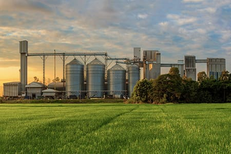
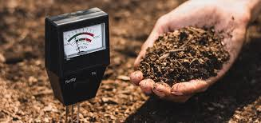

Fertilizer Production

At Lionvert, we produce high-quality, eco-friendly fertilizers that are tailored to meet the needs of various crops. Our fertilizers are designed to improve soil fertility, increase crop yields, and promote sustainable farming practices. We use advanced technology and rigorous testing to ensure that our products are both effective and environmentally responsible.
Agricultural Research
Our dedicated research team works tirelessly to innovate and develop new agricultural techniques that enhance productivity and sustainability. We collaborate with leading scientists and institutions to conduct research in areas such as soil health, crop genetics, and integrated pest management. Our findings are shared with the farming community to help them adopt best practices and achieve better outcomes.
Consultancy Services
Lionvert offers comprehensive consultancy services to help farmers and agricultural businesses optimize their operations. Our experts provide tailored advice on crop selection, soil management, irrigation systems, and more. Whether you're a smallholder or a large commercial farm, we have the expertise to guide you towards more efficient and profitable farming practices.
Soil Testing and Analysis
Understanding your soil is key to successful farming. Lionvert provides detailed soil testing and analysis services to assess soil health, nutrient levels, and pH balance. Our reports include actionable recommendations to improve soil quality and ensure optimal growing conditions for your crops.